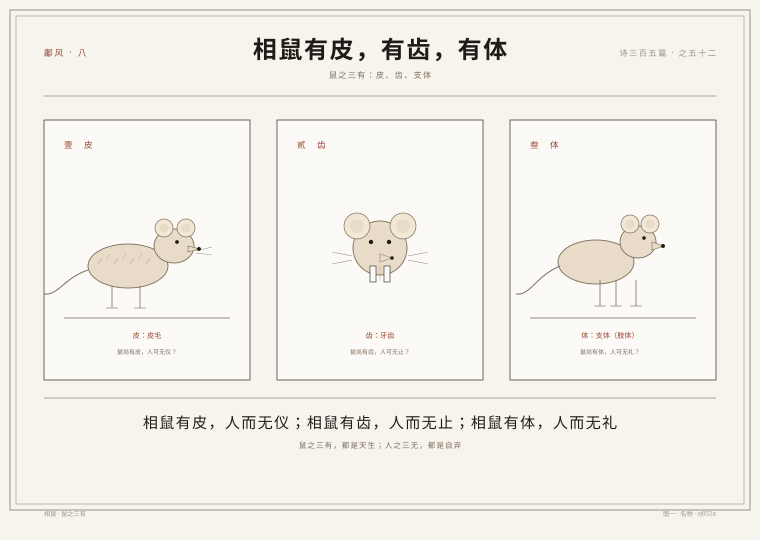
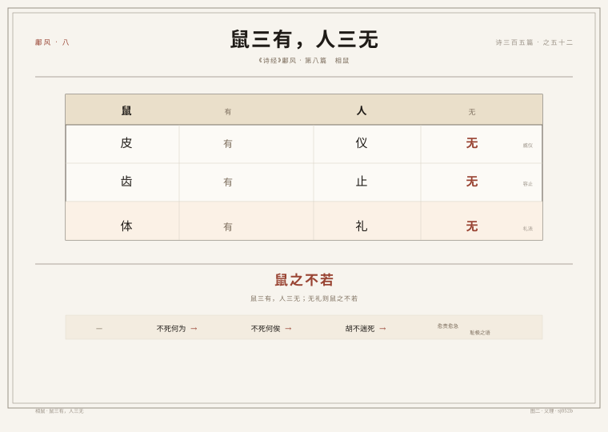

第五十二篇 相鼠
鄘风 · 之八 SJ052
朗读 · 普通话
依经文正文朗读，句读从文；不配乐、不改速、不加拖腔。全库同一音色（豆包 TTS），非播音员录制。
一 解题
诗三判：
- 谁在说：卫人、国人；刺在位而无礼者。不是自嘲，也不是泛泛骂世。
- 说什么事：以鼠之皮、齿、体，反衬人之无仪、无止、无礼；三章递进，最后咒其速死。
- 为何编在此：鄘风第八篇。前七篇由守、讳、刺、桑间、名分、复国、止奔；此篇由婚姻之礼转到「人之所以为人」的底线。礼不是装饰，是活着的资格。
《毛序》：「《相鼠》，刺无礼也。卫文公能正其群臣，而刺在位承先君之化，无礼仪也。」
朱子《诗集传》：「兴也。相，视也。鼠，虫之可贱恶者。言视彼鼠，而犹必有皮。可以人而无仪乎。人而无仪，则其不死亦何为哉。」
本库的看法：这首诗的狠，不在骂「去死」，在「相鼠」二字：先把人放到鼠旁边看。
鼠有皮、有齿、有体；人无仪、无止、无礼。鼠的三样都是天生，人的三样都是自弃。
二 经文
第一章
相鼠有皮，人而无仪。人而无仪，不死何为？
第二章
相鼠有齿，人而无止。人而无止，不死何俟？
第三章
相鼠有体，人而无礼。人而无礼，胡不遄死？
分章：三章，章四句。
章末韵：
- 一章：皮、仪、为（歌部）。
- 二章：齿、止、俟（之部）。
- 三章：体、礼、死（脂部）。
三 韵读
| 一 |
皮、仪、为 |
歌部 |
| 二 |
齿、止、俟 |
之部 |
| 三 |
体、礼、死 |
脂部 |
三章三换韵：歌—之—脂。每章四句，句句押韵；愈押愈短，愈责愈急。「不死何为」「不死何俟」「胡不遄死」，一句紧一句。
四 字义与名物
字义
- 相——视、看。
- 鼠——老鼠；朱子谓「虫之可贱恶者」。
- 皮——皮毛、皮子。
- 仪——威仪、礼仪。
- 止——容止、廉耻；毛传「所止息」，郑笺「容止」。
- 俟（sì）——等待。
- 体——支体、肢体。
- 礼——礼法、礼仪。
- 胡——何、为什么。
- 遄（chuán）——速、快。
名物
- 鼠三有——皮、齿、体；鼠之形全，是天生的。
- 人三无——仪、止、礼；人之立身，是自弃的。
- 仪 / 止 /
礼——威仪、容止、礼法；三层，一层深一层。
五 今译
第一章
看那老鼠还有皮，人却没有威仪。人没有威仪，不死做什么？
第二章
看那老鼠还有牙齿，人却没有容止。人没有容止，不死还等什么？
第三章
看那老鼠还有肢体，人却没有礼。人没有礼，为什么不快点死？
六 章旨
一章：鼠有皮，人无仪；无仪则不死何为。
仪是威仪；鼠尚有皮，人却连体面都没有。
二章：鼠有齿，人无止；无止则不死何俟。
止是容止、廉耻；鼠尚有齿，人却连分寸都没有。
三章：鼠有体，人无礼；无礼则胡不遄死。
礼是礼法；鼠尚有体，人却连人样都没有。
三章合看：鼠三有，人三无；愈比愈下，愈责愈急。
七 诗教
- 兴：相鼠起兴，三章三兴；以鼠之有形，反衬人之无礼。
- 观：观礼的底线：仪、止、礼，三层；不是繁文缛节，是人之为人的样子。
- 群：可与「守着最后一点体面」的人同群；也可与「把礼当遮羞布」的人同群。
- 怨：怨在「不死何为」——不是恨，是耻；耻到极处，话就重。
八 分寸与边界
- 不可把「相鼠」当骂人「鼠辈」。「相」是看，鼠是反衬；不是把人比鼠，是让人看鼠。
- 不可把「仪」只当仪表。它是威仪、礼仪，是立身之度。
- 不可把「止」只当停止。它是容止、廉耻、所止之处。
- 不可把「礼」只当繁文缛节。此诗之礼，是人之为人的底线。
- 不可把「胡不遄死」当普通咒骂。它是礼坏之耻的极端表达；读时不必照搬，但要看见其重。
九 存疑
- 诗旨与旧说：毛序「刺无礼」，谓卫文公正群臣而刺在位者；鲁诗「妻谏夫」；或说「刺在位者无礼仪」。本库从毛序，旧说两存。
- 文字异文：「相」或读「视」；「止」或借「耻」；「仪」或作「义」。皆一字之微，不碍大义。
- 名物歧解：鼠＝老鼠；「皮、齿、体」为鼠三有；「止」有「止息」「容止」「廉耻」三义；「礼」有「礼法」「礼仪」二义。
- 年代与作者：诗无作者。毛序系卫文公；诗或刺在位者；具体人无考。
- 编次之疑：为何在《蝃蝀》后？由婚姻之礼到人之为人的礼；由「奔」到「无礼」；也可能是卫俗组诗，《鄘风》篇次未必有严密义例。
十 跨典
- 《鄘风·蝃蝀》：前篇止奔，此篇刺无礼；一婚姻，一立身。
- 《鄘风·墙有茨》：前篇讳「中冓」，此篇直斥无礼；一讳一斥。
- 《论语·为政》：「道之以德，齐之以礼，有耻且格。」礼与耻；此篇「无礼」则无耻。
- 《礼记·曲礼》：「鹦鹉能言，不离飞鸟；猩猩能言，不离禽兽。今人而无礼，虽能言，不亦禽兽之心乎？」人而无礼，禽兽不如；此篇「鼠之不若」同调。
- 《孟子·公孙丑上》：「无恻隐之心，非人也。」人之为人的底线；此篇「无礼」非人。
- 《魏风·硕鼠》：「硕鼠硕鼠，无食我黍。」鼠喻剥削者；此篇鼠作反衬；一刺税，一刺礼。
十一 双卡与图
双卡五对：
| 相鼠（看鼠） |
鼠辈（骂人） |
| 仪（威仪／礼仪） |
仪表（偏） |
| 止（容止／廉耻） |
停止（偏） |
| 礼（人之为人的底线） |
繁文缛节（偏） |
| 胡不遄死（耻极之语） |
普通咒骂（轻） |

图一 · 相鼠三有：皮、齿、体 名物图

图二 · 鼠三有，人三无 义理图
读图三处：
- 三鼠：图一三格，皮、齿、体；皮看毛，齿看门牙，体看四肢。
- 三无：图二左鼠右人；中列三「有」，右列三「无」；礼一行标赭。
- 一句紧一句：不死何为→不死何俟→胡不遄死；由问到来，由来到咒。